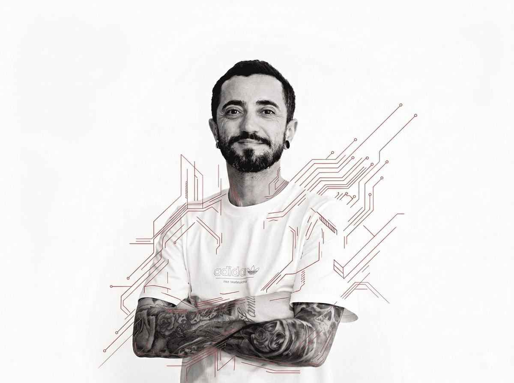

Olá
Eu sou Robson
Vital
Senior UX/UI & Product Designer
Perfil híbrido em design, front-end e produto. Especialista em experiências digitais orientadas a dados, conversão e produtos escaláveis há mais de 15 anos.

Scroll Down